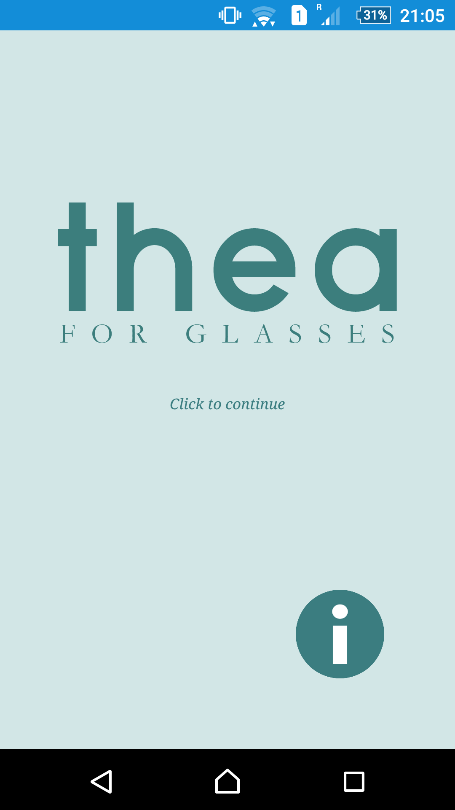
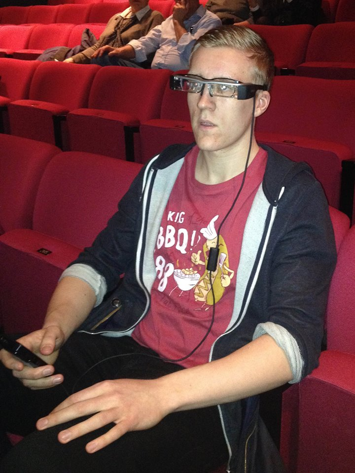

Thea for Glasses

What is Thea for Glasses?
Originally, Thea was a smartphone app solution that improve accessibility to theater stage and screen for people with hearing disabilities and the visually impaired, and for people who need foreign language support created by the company
DoGood back in 2009. The app provided smart-captioning for theatrical plays and was fairly successful around countries in Europe. In 2014 they recruited me and a team to develop this app one step further by bringing and adapting the product to an up and coming technology - augmented reality glasses.
Thea For Glasses was developed specifically for the Epson BT-200 augmented reality glasses and is still in use today. The Epson glasses used a modified version of Android as their OS and so the app works on all Android devices. The app however is still only for private use and cannot be found on any conventional app-store. Sourcecode for this project can be provided upon request.
We established a partnership with Dramaten (The Royal Dramatic Theater) in Stockholm and used one of their main stages as our testing grounds. We performed multiple user tests focusing on User Experience and to develop a product optimally tuned for our intended audience. The final product was a huge success.
Click here for an article about this product. (In Swedish)

A team member doing testing with a prototype version of the sotware during one of our user-testing sessions at The Royal Dramatic Theater in Stockholm

Official photo of BT-200 Epson Augmented Reality Glasses

Old styled-subtitles being replaced by our new system.

Final testing phase in an auditorium at KTH (Kungliga Tekniska Högskolan).

The final product ready for official use.